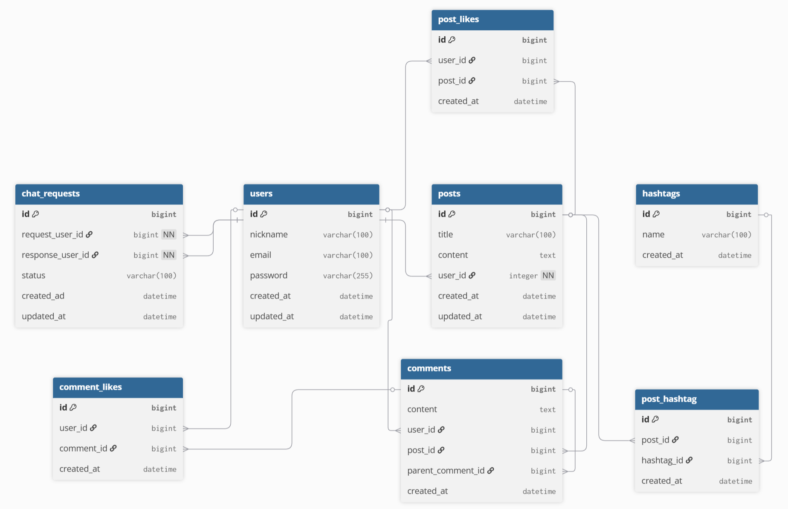

데이터 모델을 그림에서 실제 테이블로

| 테이블 | 컬럼 |
|---|---|
| users | idPK, nicknameUQ, emailUQ, password, timestamps |
| posts | idPK, title, content, user_idFK, timestamps |
| comments | idPK, content, user_idFK, post_idFK, parent_comment_idFK |
| post_likes | idPK, user_idFK, post_idFK · UQ(user, post) |
| comment_likes | idPK, user_idFK, comment_idFK · UQ(user, comment) |
| hashtags | idPK, nameUQ |
| post_hashtag | idPK, post_idFK, hashtag_idFK · UQ(post, hashtag) |
| chat_requests | idPK, request_user_idFK, response_user_idFK, status, timestamps |
PK 기본키 · FK 외래키 · UQ 유니크
parent_comment_id가 같은 테이블의 id를 참조NULL, 대댓글은 부모 댓글을 가리킴request_user_id / response_user_id 둘 다 users.id 참조post_hashtag로 1:N + N:1 두 개로 분해UNIQUE(post_id, hashtag_id)로 중복 연결 방지posts.like_count로 바로 세는 것도 고려post_likes로 분리COUNT(*)로 언제든 계산 가능comments와 comment_likes를 분리post_likes와 동일 (user + 대상 + UNIQUE)→ 집계는 계산으로, "누가 했는가"는 행(row)으로 남긴다.